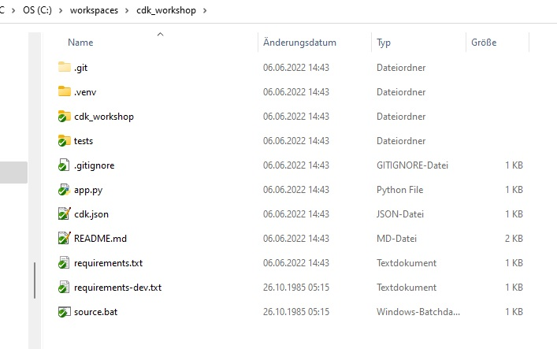

SCC
Brasil
os cloud gurus
Software Cloud Consulting
Your software development, cloud, consulting & shoring company
Get started with the AWS CDK
By Wolfgang Unger
In this short tutorial let's give a quick overview on how to get started with the CDK ( this
example is for Python). For all of those who don't have yet big experience on this.
How to setup our first cdk project and also some important links to find informations on the
next steps.
The first link you should know is the official AWS Documentation for the CDK
Please have a look, you find many informations there, from the setup to concepts and examples and howTos .
before we can create our first project, there are of yourse some prerequisites.
Of course you need to have Python (including pip and virtualenv) and the AWS CDK installed on your computer.
You find everything to setup the prerequisites in the getting started section of the just mentioned Docu.
The importand command to install the aws cdk:
npm install -g aws-cdk
Once you have everything setup, you should definitly take a look in the AWS CDK Workshop:
This is a very HowTo on getting started with the CDK for each of the supported languages like Python, Typescript, Java, .NET .
We we take a look in the Python Workshop and follow the instructions there.
Here is a quick summary of the commands you have to execute to create and initialize your first CDK Project.
First we create a new folder for our first cdk project ( and change directory inside this folder)
mkdir cdk_workshop && cd cdk_workshop
Now we can init the project inside our new cdk_workshop folder
cdk init sample-app --language python
Now our folder should look like this ( please ignore the .git folder):

A short summary on the files :
the folder cdk_workshop is supposed to have the cdk stacks. there is by now only on generated
stack inside : cdk_workshop_stack.py
If you create more stacks, you can locate them here, or feel free to structure the single folder
with more subfolders.
The folder .venv is for the virtual environment, normally you can ignore this folder ( as long it is there and everything is working)
The folder tests is of course for ...tests. Feel free to write your cdk unit tests there.
The following files are important :
the app.py is the main python file, which will be called when you execute cdk commands ( like cdk ls, cdk synth etc)
It includes the stacks which should be deployed ( or include a pipeline which includes the stacks inside the stages, but this is more advanced)
so for this simple example, it is just the one stack from the already mentioned cdk_workshop folder . And then does the synthesize .
app = cdk.App()
CdkWorkshopStack(app, "cdk-workshop")
app.synth()
The cdk.json is also an important file, here you can define all the configurations for your project, like the accounts, the account nunbers,
codestar connections, emails for sns and much more. But for now, we can just leave it the way it is by now.
Furthermore you must know the requirements.txt, it will all pip modules, your app is going to need . After the init it only contains 2 lines:
aws-cdk-lib==2.22.0
constructs>=10.0.0
Now me must activate our virtual environment. On windows you have to execute
.venv\Scripts\activate.bat
Next we can install the our dependencies, which we already know from the requirements.txt
pip install -r requirements.txt
Once this succeeded, you can finally synthesize your project, which will create the cloud formations template in the folder cdk.out.
Please look inside this folder, you should the cloud formation for the cdk_workshop_stack in json format.
cdk synth
If you want to deploy this stack ( and cloud formation) by now to your account, you must first set your aws credentials in the command line.
This command looks like ( in Linux):
export AWS_ACCESS_KEY_ID="ASIA........"
export AWS_SECRET_ACCESS_KEY="iNazu/............................"
export AWS_SESSION_TOKEN="IQoJb3.......
or in Windows:
$Env:AWS_ACCESS_KEY_ID="ASIA............"
$Env:AWS_SECRET_ACCESS_KEY="iNaR..............."
$Env:AWS_SESSION_TOKEN="IQoJb......"
Now you can deploy your code with
cdk deploy
Switch to CloudFormation in the AWS Console and you should see your stack being deployed currently.
Congratualations! You have successfully created your first cdk project and deployed to your account.
Now your start to write your own cdk code, your own stacks with resources you need for your project.
Please take a look to the aws samples, this will help you a lot, if you are not so familiar with cdk coding yet
Take also a look into my github account, you might find some interesting stuff there also
Also a very important link, you will need a lot in the future , the CDK Reference Dokumentation
Autor

Wolfgang Unger
AWS Architect & Developer
4 x AWS Certified
1 x Azure Certified
A Cloud Guru Instructor
Certified Oracle JEE Architect
Certified Scrum Master
Certified Java Programmer
Passionate surfer & guitar player